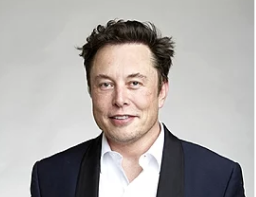

Немного обо мне
Всем привет! Меня зовут София Брояко. К своим 15 годам я успела попробовать достаточно много разных видов деятельности. Мне очень нравится заниматься творчеством: рисовать, играть на фортепиано, шить, - также я люблю точные науки и не так давно меня заинтересовала сфера веб-дизайна и веб-разработки. В детстве я наотрез не хотела связывать свою жизнь с ИТ, меня больше интересовала медицина, пение, одно время я даже хотела стать кассиром. Совсем скоро мне нужно будет сделать свой жизненный выбор, но я так до конца не определилась кем бы я хотела стать. Скорее всего это будет связанно с ИТ.
ИТ Специалист
IT-специалист — это объединяющее множество профессий понятие, которое относится и к программисту, и к администратору сети, и к разработчику решений, к техническому инженеру, если говорить простым языком.
Профессиональные «айтишники» применяют технические знания для внедрения, мониторинга и обслуживания ИТ-систем. Специалисты обычно сосредоточены на конкретной функции компьютерной сети, базы данных или системного администрирования. Специальные области включают анализ сети, системное администрирование, безопасность и обеспечение информации, ИТ-аудит, администрирование баз данных, веб-администрирование, оказывают всевозможные ИТ-услуги.
Основными направлениями есть: разработка, маркетинг, дизайн, коммуникации и инфраструктура, узкие сферы (от космоса до медицины).
Билл Гейтс

Американский предприниматель и общественный деятель, филантроп, один из создателей (совместно с Полом Алленом) и бывший крупнейший акционер компании Microsoft
Илон Маск
Американский предприниматель, инженер и миллиардер. Основатель SpaceX; генеральный директор и главный идейный вдохновитель компании Tesla.
Стив Джобс
Американский предприниматель, изобретатель и промышленный дизайнер, получивший широкое признание в качестве пионера эры информационных технологий.
Марк Цукерберг
Американский медиамагнат, интернет-предприниматель и филантроп. Известен как соучредитель компании Meta (ранее — Facebook, Inc.)
На сегодняшний день все сферы нашей жизни стают все более автоматизированней и каждому человеку важно иметь базовые навыки владения компьютером. Но именно айтишники и создают эту автоматизацию, помогают людям в ней разобраться и защитить свою информацию. Поэтому эта сфера очень восстребованна на данный момент.
Основными плюсами для меня являются:
- Высокий уровень дохода
- Возможность выбора (от направления до места работы (с любой точки мира или в офисе))
- Нет слова “невозможно”
- По большей части работа с техникой, а не людьми
- Четкость действий (без абстракций)
Но без минусов тоже не обошлось:
- Огромный ущерб здоровью (негативное влияние на зрение, сидячий образ жизни)
- Нужно постоянно учится и быть в тренде, чтобы быть восстребованным специалистом
- Для предыдущего пункта нужно хорошо владеть иностранными языками, хотя бы английским
- Очень сильное логическое мышление требуется